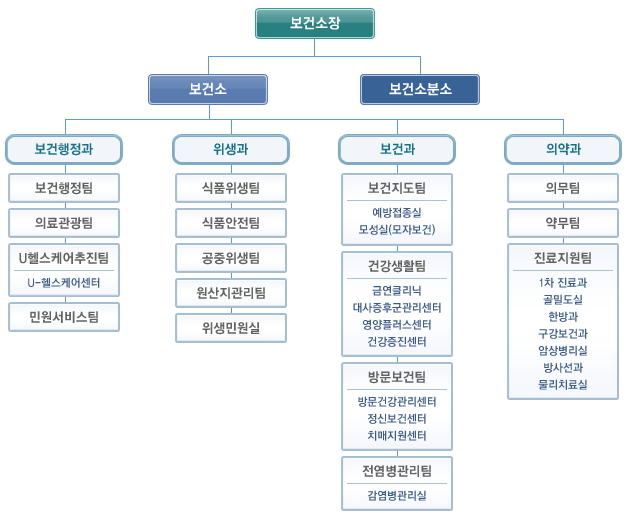

| 구분 | 업무내용 | |
|---|---|---|
| 보건행정과 (☎3423-7015) |
보건행정팀 | 보건기획, 회계 및 예산업무, 청사관리, 직원복무 및 인사관리 |
| 의료관광팀 | 강남구의료관광 활성화 추진 | |
| U헬스케어추진팀 | U-Healthcare 추진계획 수립, U-Healthcare 신규사업 발굴, 건강도시만들기(u-헬스파크) | |
| 민원서비스팀 | 보건민원신고, 진료안내, 식품영업신규신고, 식품영업사항 변경신고/승계신고 | |
| U-헬스케어센터 | 기본검사(비만도.체성분.혈압.공복혈당.이상지질혈증검사 등), 개인별 맞춤형 영양 및 운동 등 건강상담 | |
| 위생과 (☎3423-7067) |
식품위생팀 | 음식문화개선사업 추진, 식품접객업소 행정처분·소송, 모범음식점 지정관리, 식중독예방,식품진흥기금 관리, 불법퇴폐업소 단속, 소비자식품위생감시원 운영 |
| 식품안전팀 | 식품제조가공업, 건강기능식품, 식품등 수입판매업, 집단급식소 관리, 부정불량식품신고, 어린이식생활 안전관리, 식품수거 검사 |
|
| 공중위생팀 | 숙박업, 이·미용업, 목욕업, 세탁업, 명예식품위생감시원 운영 | |
| 원산지관리팀 | 원산지관련 지도, 점검 | |
| 위생민원실 | 식품위생·공중위생·축산물 영업신고 등 민원처리 | |
| 보건과 (☎3423-7101) |
보건지도팀 | 저출산지원, 미숙아관리, 선천성대사이상 검사비지원 산후조리원, 임산부관리, 신생아청력검사,산모신생아도우미제공기관 관리, 생애주기별 여성건강관리사업, 예방접종, B형간염 주산기감염 예방사업 |
| 건강생활팀 | 건강증진사업(금연,절주,영양,운동), 금연클리닉사업, 대사증후군관리사업 영양플러스사업, 아토피예방관리사업, 심뇌혈관질환예방관리사업 |
|
| 방문보건팀 | 방문건강관리, 정신보건, 치매관리 , 국가암·건강검진, 의료비지원사업(희귀난치질환자, 암환자, 가정간호), 지역사회 건강조사 |
|
| 전염병관리팀 | 방역업무, 만성전염병, 급성전염병, 결핵, 건강진단 | |
| 예방접종실 | 예방접종 | |
| 금연클리닉 | 금연상담 및 교육, 니코틴 검사, 사업장 이동금연클리닉 운영 | |
| 방문건강관리센터 | 방문간호서비스, 재활서비스, 호스피스 간호 | |
| 전염병예방과 | 결핵관리 | |
| 모성실(모자보건) | 임산부관리, 영유아건강관리 | |
| 정신보건센터 | 정신건강예방사업, 사례발굴 시스템 구축사업, 중증정신질환자관리사업 소아청소년관리사업, 사회통합촉진관리사업 |
|
| 대사증후군관리센터 | 대사증후군검사, 개인별 맞춤형 영양 및 운동 등 건강상담 | |
| 건강증진센터 | 종합건강체력검진, 운동처방 및 지도, 영양상담 | |
| 치매지원센터 | 치매예방 및 인식개선사업, 치매조기검진사업(선별,정밀,원인확진검사) 치매등록관리 및 지역사회 자원강화사업, 치매치료비지원사업 |
|
| 영양플러스센터 | 영양평가, 영양상담 및 교육, 보충식품공급 | |
| 의약과 (☎3423-7142) |
의무팀 | 의료인 및 의료기관지도, 응급의료관리업무 |
| 약무팀 | 약국 및 의료기기, 마약 등 관리지도 업무 | |
| 진료지원팀 | 진료사업, 구강보건사업, 진단방사선 등 지도업무 | |
| 1차진료과 | 내과진료 | |
| 한방과 | 한방진료 | |
| 임상병리실 | 혈액, 소변, 심전도 등 각종 검사 | |
| 골밀도실 | 골밀도검사 | |
| 구강보건과 | 초기충치치료 및 예방적 치과진료 | |
| 방사선실 | X-ray촬영(흉부) | |
| 물리치료실 | 통증완화치료 | |